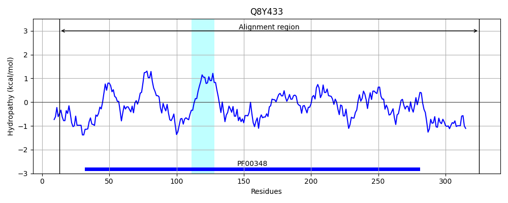
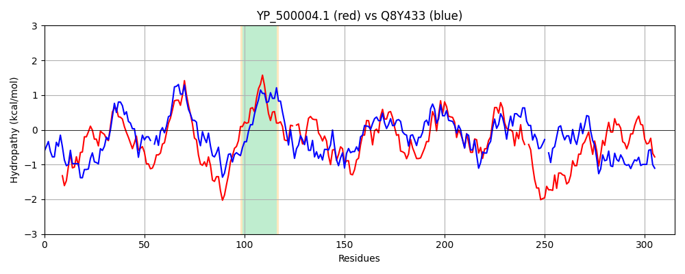

Hit Accession: Q8Y433
Hit TCID: 5.B.14.1.1
Hit Description: gnl|BL_ORD_ID|17055 gnl|TC-DB|Q8Y433|5.B.14.1.1 Lmo2641 protein OS=Listeria monocytogenes serovar 1/2a (strain ATCC BAA-679 / EGD-e) OX=169963 GN=lmo2641 PE=3 SV=1
Mach Len: 315
e:0.000000
Query TMS Count : 1
Hit TMS Count: 1
TMS-Overlap Score: 0.900000
Predicted Substrates:CHEBI:10545;electron
BLAST Alignment:
Score: 508 , Bit scores: 200 bits, E-value: 2.6e-62, Alignment length: 315, Percentage identity: 37
Query: 1 MNNEIKKVEQRLEKAIKSKDSVLEQASLHLLSSGGKRVRPAFVILSSQFGKDEQTSEQTYQVAVALELIHMATLVHDDVIDKSDKRRGKLTISKKWDQTTAILTGNFLLALGLEHLMAVKDNRVH-QLISESIVDVCRGELFQFQDQFNSQQTIINYLRRINRKTALLIQISTEVGAITSQSDKETVRKLKMIGHYIGMSFQIIDDVLDFTSTEKKLGKPVGSDLLNGHITLPILLEMRKN-PDFKLKIEQLRRDSERKEFEECIQIIRKSDSIDEAKAVSSKYLSKALNLISELPDGHPKSLLLSLTKKMGSRN 313
++ ++++V Q +EK I+ +D +EQ L+ +GGK +RPAF +LS+Q G D ++ +A ALE++HMATL+HDDV+D S RRG TI K+ + A+ TG++L + + L A + + + S++I + GEL Q + + T+ YL RI+ KTA L +S GA S++ + TV K IGHY+GM+FQIIDDVLD+TST++ LGKPV +D+ G +LP++ M+ + +F+ + Q + D + E+ + +I K +++A ++ KY +KAL I +LP G + + LTK + R+
Sbjct: 13 LSKDLQEVLQTIEKNIQIRDKHVEQNVKDLIHAGGKLLRPAFALLSAQAGPDYD-KDRAVSIAAALEVLHMATLIHDDVVDDSPLRRGIPTIHSKYGRNYAVYTGDYLFCICFKILSAHASSVENIEFNSKNIEKILMGELDQMRTSYKMNVTVREYLTRISGKTAQLFALSCYSGATGSKATRMTVAKCYNIGHYLGMAFQIIDDVLDYTSTDEGLGKPVLNDMKQGIYSLPLIYAMKGHLAEFEPLLSQ-KLDMTDEASEQVLALISKYKGVEQAFKLAKKYTNKALREIKKLPAGAYREDMYRLTKNILDRD 325 | Protein Hydropathy Plots: |
|---|
 |  |
Pairwise Alignment-Hydropathy Plot:
|
|---|
|  |